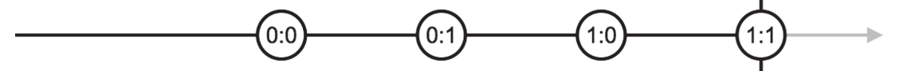
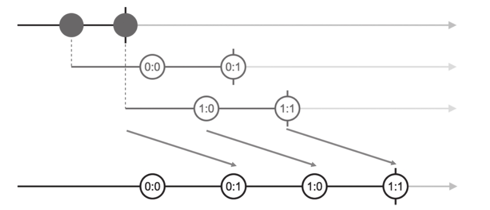
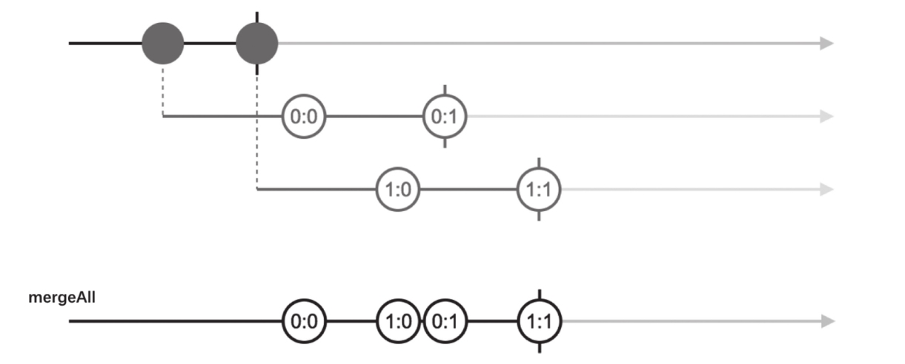

如果你阅读了本章之前的部分，而不是直接翻到这一页，那么应该已经了解最基本的合并类操作符，包括concat、merge、zip、combineLatest，RxJS提供对应的处理高阶Observable的合并类操作符，名称就是在原有操作符名称的结尾加上All，如下所示：
·concatAll
·mergeAll
·zipAll
·combineAll（这个是个例外，因为combineLatestAll显得有点啰嗦）
All代表“全部”，这些操作符的功能有差异，但都是把一个高阶Observable的所有内部Observable都组合起来，所有这类操作符全部都只有实例操作符的形式。
接下来分别介绍各个操作符的特点。
1.concatAll
还记得concat吗？concat是把所有输入的Observable首尾相连组合在一起，concatAll做的事情也一样，只不过concatAll只有一个上游Observable对象，这个Observable对象预期是一个高阶Observable对象，concatAll会对其中的内部Observable对象做concat的操作。
下面是使用concatAll的代码示例：
const ho$ = Observable.interval(1000) .take(2) .map(x => Observable.interval(1500).map(y => x+':'+y).take(2)); const concated$ = ho$.concatAll();
我们使用了和前面一样的ho$的定义，可以看到，concatAll没有任何参数，一切输入都来自上游的Observable对象。在上面的代码中，concat$的弹珠图如图5-12所示。

图5-12 concat$数据流的弹珠图
对比图5-11和图5-12，可以看到差异，第二个内部Observable会产生1：0和1：1两个数据，但是1：0这个数据在第一个内部Observable的0：1之前就产生了，但在经过concatAll之后1：0出现在0：1之后，为什么？
这是因为concatAll首先会订阅上游产生的第一个内部Observable对象，抽取其中的数据，然后，只有当第一个Observable对象完结的时候，才会去订阅第二个内部Observable对象。也就是说，虽然高阶Observable对象已经产生了第二个Observable对象，不代表concatAll会立刻去订阅它，因为这个Observable对象是懒执行，所以不去订阅自然也不会产生数据，最后生成1：0的时间也就被推迟到产生0：1之后。
图5-13中的弹珠图展示了完整过程。

图5-13 concatAll的弹珠图
和concat一样，如果前一个内部Observable没有完结，那么concatAll就不会订阅下一个内部Observable对象，这导致一个问题，如果上游的高阶Observable对象持续不断产生Observable对象，但是这些Observable对象又异步产生数据，以至于concatAll合并的速度赶不上上游产生新的Observable对象的速度，这就会造成Observable的积压。
在上面的例子中，高阶Observable对象每隔1秒钟产生一个内部Observable，而每个内部Observable对象产生完整数据要3秒钟时间，所以concatAll消耗内部Observable的速度永远追不上产生内部Observable对象的速度。如果无限产生这样的内部Observable，就会造成数据积压，注意，这里积压的数据并不是0：0、1：0这样的数据，而是内部Observable对象的积压，最终这样的积压就是内存泄露。如何处理这样的数据积压问题，在后续的章节会有介绍。
如果你能够理解concatAll，那接下来其他后缀为All的操作符都不在话下。
2.mergeAll
mergeAll就是处理高阶Observable的merge，只是所有的输入Observable来自于上游产生的内部Observable对象。
使用mergeAll的示例代码如下：
const ho$ = Observable.interval(1000) .take(2) .map(x => Observable.interval(1500).map(y => x+':'+y).take(2)); const concated$ = ho$.mergeAll();
上面的代码产生的弹珠图如图5-14所示。

图5-14 mergeAll的弹珠图
mergeAll对内部Observable的订阅策略和concatAll不同，mergeAll只要发现上游产生一个内部Observable就会立刻订阅，并从中抽取收据，所以在上图中，第二个内部Observable产生的数据1：0会出现在第一个内部Observable产生的数据0：1之前。
3.zipAll
在RxJS的官方文档中，这个操作符几乎没有文档，实际上，如果你能够理解zip，也能够理解前面介绍的concatAll和mergeAll，那么自然就能够理解zipAll。
我们使用zipAll来合并之前反复使用过的高阶Observable，修改之后的示例代码如下：
const ho$ = Observable.interval(1000) .take(2) .map(x => Observable.interval(1500).map(y => x+':'+y).take(2)); const concated$ = ho$.zipAll();
产生的输出结果如下：
[ '0:0', '1:0' ] [ '0:1', '1:1' ] complete
和期望的一样，两个内部Observable产生的数据一对一配对出现，如果我们愿意，还可以给zipAll一个函数类型的参数，就和zip的project参数一样定制产出的数据形式。
现在我们修改高阶Observable对象，让它不要完结，代码如下：
const ho$ = Observable.interval(1000).take(2).concat(Observable.never()) .map(x => Observable.interval(1500).map(y => x+':'+y).take(2)); const concated$ = ho$.zipAll();
主要的代码改变是在take之后用concat附加了一个Observable对象，这是一个很好的组合使用多个操作符例子，先用interval产生多个异步数据流，用take只取前两个数据，然后用concat在尾部补充一个Observable对象的数据，但是，我们补充的Observable对象是用never产生的，也就是一个不产生数据而且永不完结的数据流。一个只有2个数据会完结的数据流concat了一个永不完结的数据流，就形成了一个只有2个数据的永不完结的数据流。
现在，zipAll的上游是一个永不完结的Observable，当它拿到2个内部Observable的时候，无法确定是不是还有新的内部Observable产生，而根据“拉链”的工作方式，来自不同数据源的数据要一对一配对，这样一来，zipAll就只能等待，等待上游高阶Observable完结，这样才能确定内部Observable对象的数量。如果上游的高阶Observable不完结，那么zipAll就不会开始工作。
4.combineAll
combineAll就是处理高阶Observable的combineLatest，可能是因为combine-LatestAll太长了，所以RxJS选择了combineAll这个名字。
使用combineAll的示例代码如下：
const ho$ = Observable.interval(1000) .take(2) .map(x => Observable.interval(1500).map(y => x+':'+y).take(2)); const concated$ = ho$.combineAll();
上面的代码会产生如下的输出：
[ '0:0', '1:0' ] [ '0:1', '1:0' ] [ '0:1', '1:1' ] complete
combineAll和zipAll一样，必须上游高阶Observable完结之后才能开始给下游产生数据，因为只有确定了作为输入的内部Observable对象的个数，才能拼凑出第一个传给下游的数据。
如果combineAll的上游高阶Observable永不完结，即使部分内部Observable已经产生了数据，combineAll也不会有机会产生任何数据。
5.为什么没有withLatestFromAll
读者可能会有疑问，有没有withLatestFrom对应的高阶Observable处理操作符呢？
实际上，你找不到withLatestFromAll这样的操作符，因为RxJS真的没有这样的功能。
在上面所有后缀为All的操作符中，所有的内部Observable对象都是平等的，可能内部Observable对象出现的先后顺序会决定最终数据的产生顺序，但是，彼此之间的地位是平等的。可是，对于withLatestFrom，只有一个输入Observable控制产生数据的节奏，其余的Observable只提供数据。
假设我们做一个支持高阶Observable和withLatstFrom功能一样的操作符，按照后缀带All的模式，就叫做withLatestFromAll吧，那么，这个withLatestFromAll必须特殊处理产生的第一个内部Observable对象，因为第一个内部Observable对象控制给withLatestFromAll下游数据的节奏，从第二个内部Observable对象开始就只提取数据。
要实现上面所说的withLatestFromAll的功能，理论上当然完全可行，但是这样一来就要对高阶Observable产生的内部Observable做区分对待，对一个Observable中的数据做区分对待，这样看起来并不是很好的选择，所以RxJS并没有提供withLatestFromAll这样的操作符。